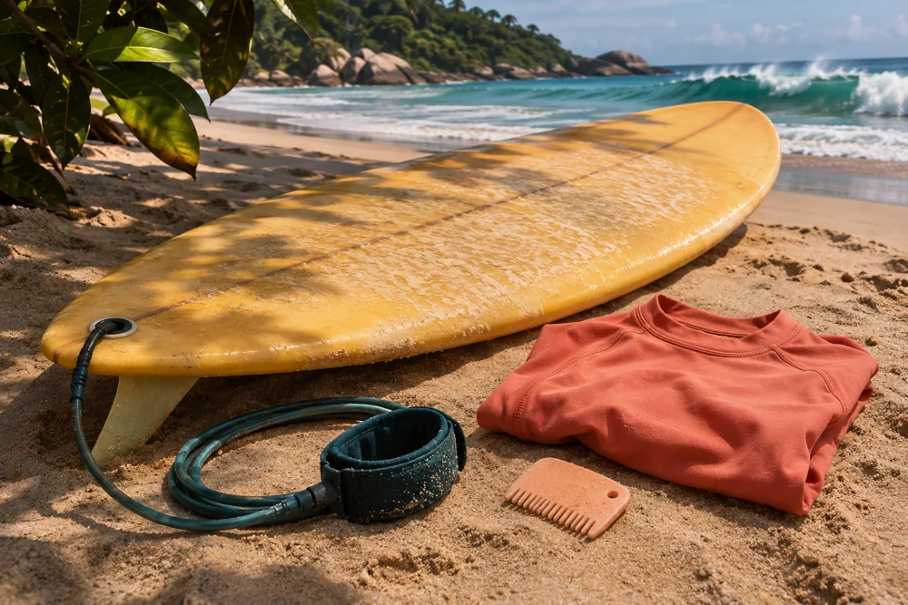

Indicações da ASF · 2026
Black Friday do surf
25 escolhas para acompanhar na Amazon, da lycra que vai para a água ao chinelo que espera na areia.
Ver a seleção
Nesta seleção
O que acompanhar
Esta seleção reúne produtos para monitorar durante a Black Friday. Confira na Amazon se há desconto para o tamanho, a cor ou a versão que você procura. Compare o total com frete com um preço que você já tenha visto para o mesmo item.
Para vestir na água
Compare o ajuste nos ombros e o comprimento do tronco. Nas peças de duas partes, confira também como o top fecha nas costas.
-
Lycra feminina de surf, manga longa
Para usar com biquíni ou bermuda. Compare a medida do busto e o comprimento da barra na posição de remada.
PublicidadeVer produto na Amazon -
Speedo Sunkini Solid
Conjunto esportivo de duas peças. Confira a cobertura da calcinha e o ajuste do top ao levantar os braços.
PublicidadeVer produto na Amazon -
Maiô de surf Gérbya de manga longa
Uma opção estampada para quem prefere entrar no mar com uma única peça. Compare a cobertura nas costas.
PublicidadeVer produto na Amazon -
Arshiner conjunto infantil de três peças
Confira quais peças acompanham o conjunto e escolha pela altura da criança.
PublicidadeVer produto na Amazon
Chapéus, bonés e protetor solar
No chapéu, observe a aba e a fixação. No protetor, compare embalagens equivalentes pelo custo por grama ou por 100 ml.
-
Soulfins boné de surf
Para comparar o encaixe na cabeça e a largura da aba na posição de remada.
PublicidadeVer produto na Amazon -
Sukeen chapéu bucket reversível
A aba contorna a cabeça. Veja a circunferência disponível e as duas faces do tecido.
PublicidadeVer produto na Amazon -
Banana Boat Dry Balance Sport FPS 50
Apresentação corporal em aerossol. Compare o volume e confira a resistência à água declarada no rótulo.
PublicidadeVer produto na Amazon -
Pink Cheeks Pro Stick FPS 96
Bastão para levar na bolsa de praia. Confira a tonalidade da versão selecionada.
PublicidadeVer produto na Amazon -
Anasol An Sport labial FPS 60
Protetor específico para os lábios. Confira o peso e as orientações de uso.
PublicidadeVer produto na Amazon
Para levar até a praia
Uma bolsa de tela ajuda a ventilar o que veio da areia. Para levar roupa seca, compare o volume e a vedação dos sacos estanques.
-
Play & Joy bolsa de tela com compartimento térmico
A área de tela e a base térmica atendem a usos diferentes. Confira as medidas de cada compartimento.
PublicidadeVer produto na Amazon -
Guepardo Keep Dry 10 L
Saco estanque de tamanho intermediário. Reserve espaço no topo para fechar a boca por enrolamento.
PublicidadeVer produto na Amazon -
Naturehike Náutico 20 L
Compare o volume com o da sua toalha e da muda de roupa já dobradas.
PublicidadeVer produto na Amazon -
Nautika Duffle estanque 20 L
Formato de mala para separar roupa seca e equipamento. Confira o tipo de alça.
PublicidadeVer produto na Amazon
Para depois do surf
Compare numeração, tiras e tamanho do solado. Para a toalha, confira se ela cabe na bolsa que você leva à praia.
-
Havaianas Top
Chinelo de dedo para o caminho até a areia. Confira a numeração brasileira na variante selecionada.
PublicidadeVer produto na Amazon -
Ipanema Slide Bold
Tira larga sobre o peito do pé. Compare a altura da abertura com um slide que você já usa.
PublicidadeVer produto na Amazon -
Kenner Kyra Pro
Compare o formato da palmilha e a espessura do solado com os dos seus chinelos de praia.
PublicidadeVer produto na Amazon -
Döhler toalha Summer
Modelo de praia para levar na surf trip. Compare as dimensões e o acabamento do tecido.
PublicidadeVer produto na Amazon
Para equipar a prancha
Confira o encaixe das quilhas e as medidas do leash e do deck para a sua prancha. Mesmo em promoção, a peça precisa ser compatível.
-
Red Skull triquilha padrão FCS M3
O conjunto é anunciado com chave e parafusos. Confira o encaixe da sua prancha.
PublicidadeVer produto na Amazon -
Dakine Kainui Team 6 pés
Compare o comprimento com o da prancha e veja se o punho é de tornozelo ou panturrilha.
PublicidadeVer produto na Amazon -
Deck de rabeta em EVA para surf
Compare a área das peças com a largura da rabeta antes de colar.
PublicidadeVer produto na Amazon -
FCS II Mick Fanning
Jogo de três quilhas para caixas FCS II. Confira o tamanho oferecido na variante.
PublicidadeVer produto na Amazon
Para a próxima surf trip
Na roupa de borracha, compare as medidas e a espessura. Para filmar ou levar uma prancha maior, inclua acessórios e frete no custo final.
-
Quiksilver Prologue 3/2 mm Back Zip
O zíper traseiro muda a forma de vestir o long john. Confira altura e tórax na tabela.
PublicidadeVer produto na Amazon -
GoPro HERO12 Black
Para filmar a sessão de surf. Confira o tipo de suporte de prancha e se precisa comprá-lo separadamente.
PublicidadeVer produto na Amazon -
Nomar Surf bodyboard Semi-Pro 39,5″
Compare o comprimento com a altura de quem vai usar. Confira o leash que acompanha o modelo.
PublicidadeVer produto na Amazon -
Aqua Marina Fusion 10′10″
Confira o peso máximo e o que vem no kit de transporte da versão escolhida.
PublicidadeVer produto na Amazon